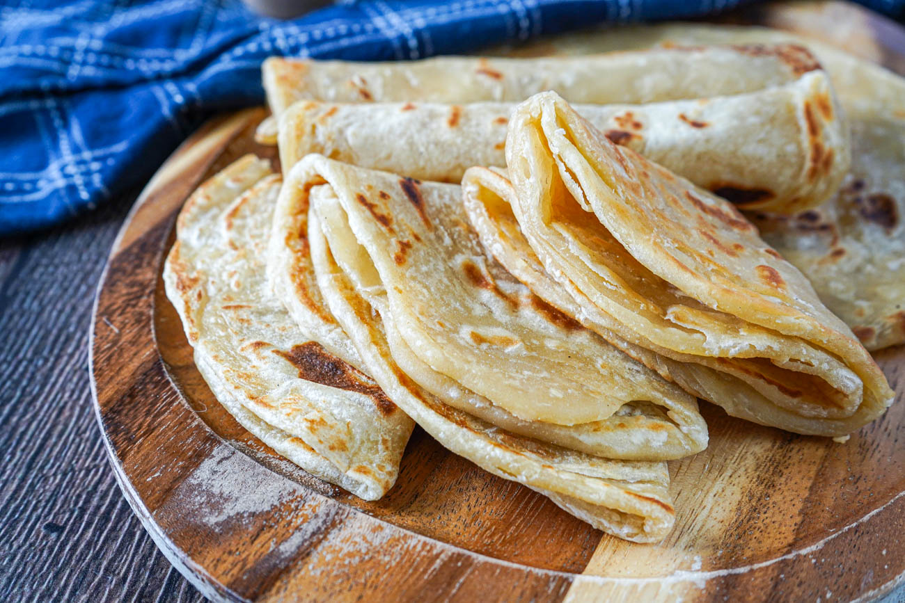

Home
Chapati

Chapati, also known as roti, rooti, rotli, rotta, safati, shabaati, phulka, chapo, sada roti, poli, and roshi. is an unleavened flatbread originating from the Indian subcontinent and is a staple in India, Nepal, Bangladesh, Pakistan, Sri Lanka, East Africa, the Arabian Peninsula and the Caribbean.
ingredients
- 2 cups chakki atta (stone ground whole wheat flour)
- 3/4 cup warm water (or hot water ; 2 to 4 tbsps more as required read notes)
- 1/4 teaspoon salt (optional)
- 1 to 1 1/2 tablespoons oil (optional ; read notes)
- 2 to 2 1/2 tablespoons ghee or oil
Steps
- To begin with, take a large-sized bowl. Put two cups of flour along with a cup of water, salt and ghee in it. Mix well and start kneading a dough. Make sure that the dough is not too thick nor too thin. It has to be of a soft and pliable consistency. Add water to get the consistency right. Keep kneading for a while.
- Now roll out few balls from the prepared dough. Place them on a flat surface, flatten them further with the help of a rolling pin. Keep using the flour in order to prevent the rolls from sticking to the surface. Once the chapatis get the perfect round shape, place a pan on medium flame.
- Once heated enough, put the chapati on the pan and cook from both sides. Use a pair of tongs to flip over to the other side. Keep the flame to medium as too much heat might burn the chapati. Check for the little brown spots. Once they start appearing, the chapati will start to puff, indicating that it's completely cooked. Once done, transfer in a kitchen towel to keep them warm. Serve along any gravy or curry of your choice.
- If you are someone who loves the richness of Ghee, then you can add some ghee while kneading the dough and with a pinch of salt this adds a nice aroma and taste to the Chapatis.